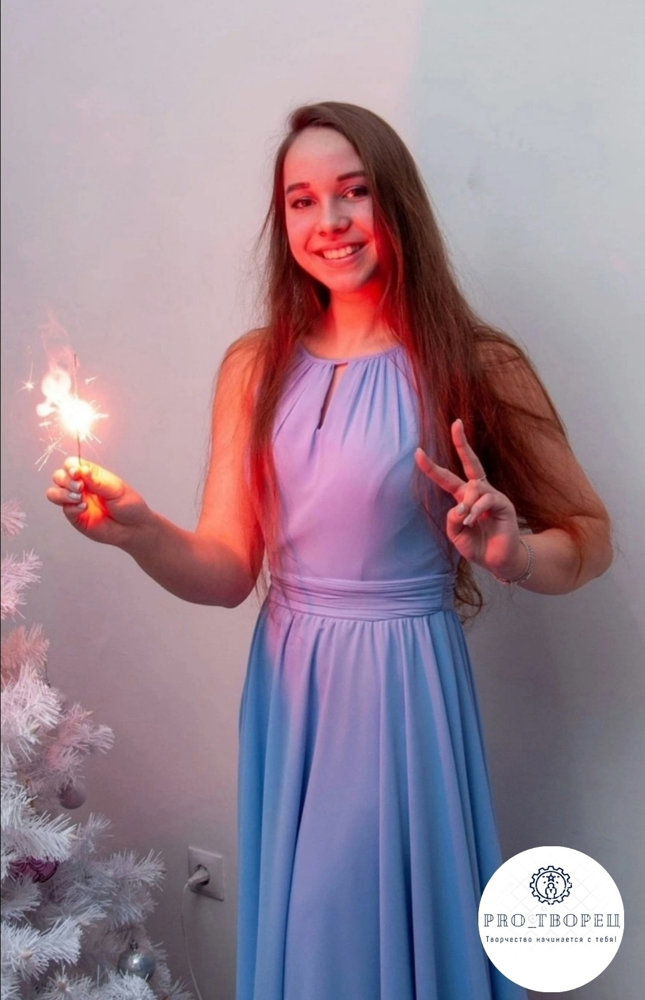

Дата рождения: Сентябрь 2004
Место рождения: Нижний Тагил
Страница в интернете: https://vk.com/club224151515
Страница на You Do: https://nizhnij-tagil.youdo.com/m13094685
Училась в МБОУ СОШ № 44. Уже в школе показывала выдающиеся способности к рисованию и музыке, участвовала в нескольких конкурсах.
В 2022 г. поступила на ФХО НТГСПИ (Изобразительное искусство и дизайн).
2023 - Исполняла обязанности заместителя студенческого декана на ФХО. Была главным художником творческого объединения PRO_Творец (https://vk.com/wall-216487547_116), где она занималась рисованием плакатов для праздников и мероприятий. Вот как ее охарактеризовали в группе объединения:
Плакаты, фотозоны, и необычный взгляд на мир - её конёк! Раскрасит как плакат, так и вашу жизнь. Наполняет объединение самыми яркими красками!
Виталина отзывчивая и добрая, придет на помощь с лучшей идеей к любому мероприятию. А еще, может выступить на сцене в роли ведущей или актера!
Озаряйте мир своей улыбкой также, как Виталина [...]
Январь 2023 - I место в номинации «Живопись» конкурса-выставки учебно-творческих работ студентов ФХО (https://old.ntspi.ru/about_academy/academy_news/70012/)
Летом 2023 ездила на пленэрную практику в поселок Баранчинский с Анастасией Арнаутовой и другими одногруппницами. Подробнее эта поездка описана в разделе об Анастасии.
В 2023 и в 2024 участвовала в конкурсе учебно-творческих работ студентов Искусство реальности. Это всероссийский конкурс, организуемый НТГСПИ, в котором участвуют студенты различных учебных заведений. Результаты:
2023
2024
Согласно отчету НТГСПИ, также участвовала в выставке лучших студенческих работ за период сентябрь - декабрь 2023.
Январь 2024 - Позировала в качестве модели для фотосессии Ангелины Новоположской в японском стиле (https://vk.com/wall-216017454?offset=0&w=wall-216017454_101). Эти фотографии в марте Ангелина представила на выставке Не художник, а творец.
Из видео Ангелины (https://www.youtube.com/watch?v=PcvPEKJ9z7I&t=25s):
В воскресенье произошла долгожданная фотосессия, как для меня, так и для моей подруги Виталины. Мы задумывали ее еще с осени, настолько все капитально было построено. Я невероятно счастлива, что это произошло. На днях уже начала с воскресенья, как мы отсняли, отбирать фотографии и редактировать их, хочется подойти к этому как-то по особенному, смаковать этот момент; опыт, который мы получили, он бесценен, конечно [Смеется].
Вся задумка заключалась именно в красном кимоно, атмосфере вот этого Китая - Японии, да, на фоне белого снега. Еще было бы идеально, если бы пошел снегопад, но нам как всегда повезло с погодой, это просто... [Показывает палец вверх] Вместо нулевых градусов, то есть мы думали, что будет безумно тепло, подбирали день. В итоге минус 6 с ветром, да плюсом мы еще снимали около пруда. К сожалению, самого процесса съемки я не смогла заснять, потому что мы очень торопились, чтобы не замерзнуть. Виталина, как настоящий герой и морж [Смеется] фотографировалась в полную силу, все что нужно было, я безумно этому счастлива, что у нас получилось воплотить эту идею. Поэтому там надо было видеть, как мы по сугробам прыгали, особенно я. Я вся тоже извалялась, я вся была мокрая, у меня вообще тоже уже начали стучать зубы от холода, у Виталины тем более...
Февраль 2024 - Участвовала в выставке-конкурсе Арт-Дуэль в Екатеринбурге. На подведение итогов в Екатеринбург Виталина, видимо, не ездила. На конкурс были выставлены ее графические работы, какие именно - неизвестно. Подробнее см. в разделе об Анастасии Арнаутовой.
Июнь 2025 - Поездка в Санкт-Петербург, посетила Эрмитаж, Михайловский оперный театр (https://vk.com/id384086272?w=wall384086272_226)
Август 2025 - Работы Виталины были выставлены в фойе Нижнетагильского Драматического Театра (https://vk.com/tagildrama?w=wall-1766548_52565)
Февраль 2026 - Выступала на Всероссийской научно-практической конференция «Наука – Творчество – Образование» с докладом на тему мозаики (https://vk.com/fho_tho?w=wall-4891369_8971)
Апрель 2026 - Участвовала в выставке детского технического и декоративно-прикладного творчества детей и учащейся молодежи во Дворце детского и юношеского творчества. В статье газеты "Тагильский рабочий" приводятся ее слова об обучении детей трехгранной резьбе по дереву:
Сначала освоили теоретическую часть и познакомились с инструментами. Потом мальчики тренировались: с помощью резаков сделали ромбы, кружочки и квадраты. Подготовив эскизы, ребята вырезали фигурки лошадок, после чего нанесли акварель и ошкурили свои изделия.
Анна Франт, директор ArtSpaceDepo, положительно отзывалась о работах Виталины, называя ее "звездочкой".
Интересы
Помимо живописи, поет и играет на гитаре. В 2023 и в 2025 участвовала в театральном проекте «Точка опоры» (https://vk.com/wall-119656322_1595, https://vk.com/proekt_teatr?w=wall-202306952_3283). В 2023 году Виталина играет роль завуча в форуме-спектакле "Я НЕ ПОЙДУ БОЛЬШЕ В ЭТУ ШКОЛУ!", посвященном теме взаимоотношений подростков, родителей и школы.
Выступления:
Публикации
В статье №1 есть забавный недочет: в английском названии слово "Мозаика" переведено как "Stuttering", т.е. "Заикание". Зато в ней раскрываются интересные подробности истории ФХО:
За годы существования факультета мозаики, фрески, витражи не раз появлялись в качестве курсовых и дипломных проектов. Появлялись и исчезали, поскольку выполнялись
из «суррогатных материалов» (имитаций). Вуз не мог позволить себе использовать в учебном процессе необходимые для этого материалы в силу их дороговизны. Настенные росписи курсовых работ выполнялись масляными красками, а любой специалист по монументальному искусству знает, что масло со стеной несовместимы. Витражное цветное стекло в советский период подменяли краской на лаке. Мозаики выполнялись подкрашенным гипсом, в ход пускались и осенние листья. О смальте для мозаики не смели даже мечтать. Время изменилось. Сегодня никого не удивляет применение в студенческих композициях профессиональных материалов. А использование суррогатных считается признаком дурного тона.В настоящее время материалы и инструментарий появились в свободной продаже, стали доступнее. Широкий ассортимент мозаичных материалов зарубежного производства, имеющийся в наличии на полках супермаркетов, не носит случайный характер. А является скорее следствием деятельности Международной ассоциации современных мозаичистов, в которую входит Россия, с центром в Санкт-Петербурге.
Статья о копировании (№3) хорошо раскрывает тему и написана грамотно, без орфографических ошибок, но есть незначительные замечания по содержанию и стилю. Например, авторы пишут о копировании работ в изобразительном искусстве, но затем перескакивают на плагиат при копировании текстов: "Чтобы избежать плагиата, важно не просто переписывать текст, а глубоко понимать суть оригинала." Также присутствует излишняя для научного стиля парцелляция: "... А.В. Андреева, отмечает. Что копирование работ мастеров...". В статье отмечается проблема интеллектуальной собственности при копировании работ. Но сама Виталина, похоже, не очень заботится об этом, так как часть ее работ является копиями чужих произведений с pinterest или сайтов онлайн-галерей, но при публикации в своей группе она не приводила ссылку на оригинал. На pinterest, впрочем, изображения выкладываются специально как идеи для других работ, так что это может и не очень важно. Так или иначе, Виталина делом доказала, что не зря выступила соавтором этой статьи, так как ее копии картин Боттичелли понравились зрителям, а "Мадонна с младенцем" стала лицом выставки "Учимся у мастеров".
Источники:
Составление каталога начато 01.06.2025. Радует, что на этот раз у почти каждой картины есть название и выходные данные. Выглядит так, будто я составляю каталог работ состоявшейся художницы, а не непонятное нечто.